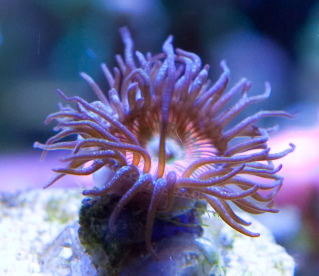
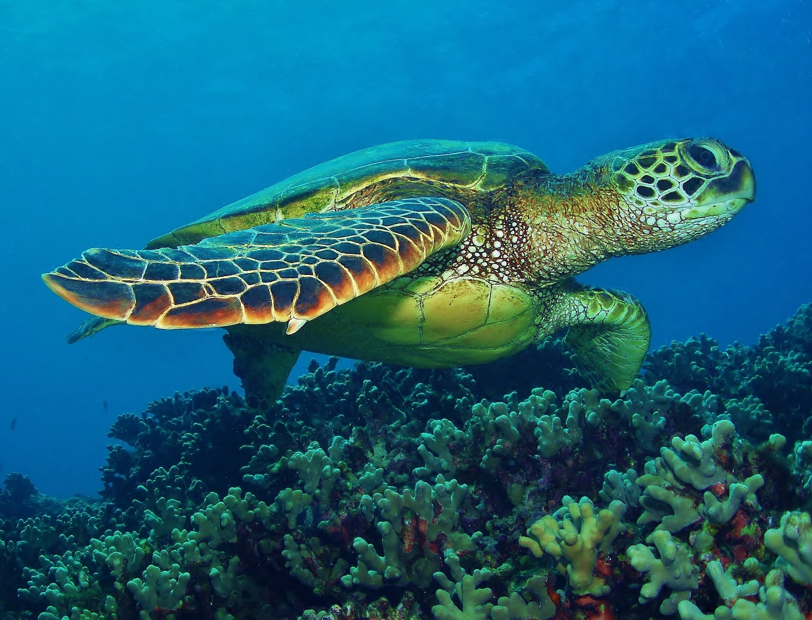
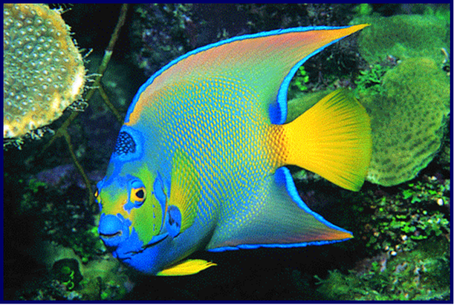

By Katie2
Animals
Coral Polyps - Anthozoa
Coral polyps, often referred to as just coral, are endangered carnivores. These invertebrates make up less than 1% of the ocean floor, but they support around 25% of all marine life. How? Corals form colonies by connecting their calicles (spongey bases), and colonies grow together to form coral reefs. These reefs can support all sorts of other organisms. Many characteristics of coral reefs actually come from the life they support. Coral polyps are actually translucent; it is the algae that grows among them that gives the reefs their wild colors. This algae also provides corals with energy; polyps use the byproducts of the algae’s photosynthesis for nutrients. Coral polyps also have barbed tentacles that they use to kill and eat zooplankton and fish.
Zooplankton - Hyperia macrocephala

Zooplankton are a species of abundant omnivores. They feed on protists as well as microphytoplankton; in areas where zooplankton are populous, they also feed on detritus. Zooplankton are also very important because they serve as the main source of food for many other organisms. One of their main characteristics, like other plankton, is their inability to control movement. While they can control their destination to some extent, often choosing destinations of a certain salinity, they move with the currents. This is dangerous because it can pull an entire population away from the elements necessary to their survival.
Green Sea Turtle - Chelonia mydas
Green sea turtles are an endangered species of turtle that lives in the tropical ocean. Contrary to popular belief, they are named for their skin color, not the color of their shells. Adult green turtles are herbivores, feeding on algae and sea grass, but juvenile green turtles are known to eat small invertebrates such as crabs, jellyfish, and sponges. Green sea turtles are critically endangered because of humans; between poachers and pollution, the turtle population is dying out.
Manatee - Trichechus
Manatees, also known as sea cows, are endangered sea mammals often mistaken for mermaids. They are herbivores who feed on water grasses and algae. Despite their size, manatees are graceful swimmers. They swim alone or in very small groups. Like all mammals, they need to breathe air; manatees can stay under for 15 minutes at rest and 4 minutes while swimming. These beautiful creatures are highly valued, and they have become endangered due to hunters seeking their hides and bones. Fishing and motor boats also pose threats.
Queen Angelfish - Holacanthus ciliaris
Queen angelfish, named for the “crown” on their heads, are omnivorous fish who live in the tropics. They mainly feed on sponges and algae. While their electric coloring may seem exotic, they blend in perfectly with the similarly colored coral reefs. Queen angelfish generally reside in pairs; they will often work together to clean parasites off of larger fish, then eat the parasites. Although queen angelfish are harvested in large numbers for the aquarium trade, they are common and have no special protection.
Decomposer: Sea Cucumber - Holothuroidea
Sea cucumbers are omnivorous invertebrates who live on the floor of the ocean. There are over 1,250 species in existence. Sea cucumbers are a type of echinoderms along with sea stars (starfish) and sea urchins. A sea cucumber’s diet consists of algae, tiny marine animals, and detritus (waste materials). Sea cucumbers break down their food into tiny pieces that become food for bacteria, therefore recycling nutrients. They are often considered the “earthworms of the ocean”. Sea cucumbers can breed through asexual reproduction, but since they often live in large herds, sexual reproduction is also possible.
Adaptations
- Seals, whales, and other animals that need to breathe air could not originally dive deep enough to reach the food they need. Over time, they evolved to have collapsible lungs and muscles that store a lot of oxygen. As they breathe in, oxygen gets stored in their muscles. The animals then collapse their lungs. This makes them more dense then the water around them, and they can dive deeply with little exertion. After they reach the depths, the oxygen stored in the muscles allows them to climb back to the surface. his adaptation is important because it expanded the niche these animals could live in by providing them with more food sources.
- The deeper the water, the colder the temperature, and many animals could not originally survive the deep ocean. However, two different groups of animals adapted to fit this climate. Mammals developed blubber, to help preserve body temperature. Some fish have an “antifreeze” protein in their blood that binds to ice crystals and keeps the fish warm. Both of these adaptations allow the animals to reach colder depths and expand their habitat and possibly their niche.
- Before adapting, fish had no way to adjust the depth of their swim; in other words, how to move up and down. They had to rely on water currents to move them. However, many fish evolved to have swim bladders. When a fish wants to move up, it secretes gas into the bladder. As it inflates, the fish drifts upward. When it wants to move back down, it reabsorbs the gas into its blood. The bladder deflates, and the fish can move back down.